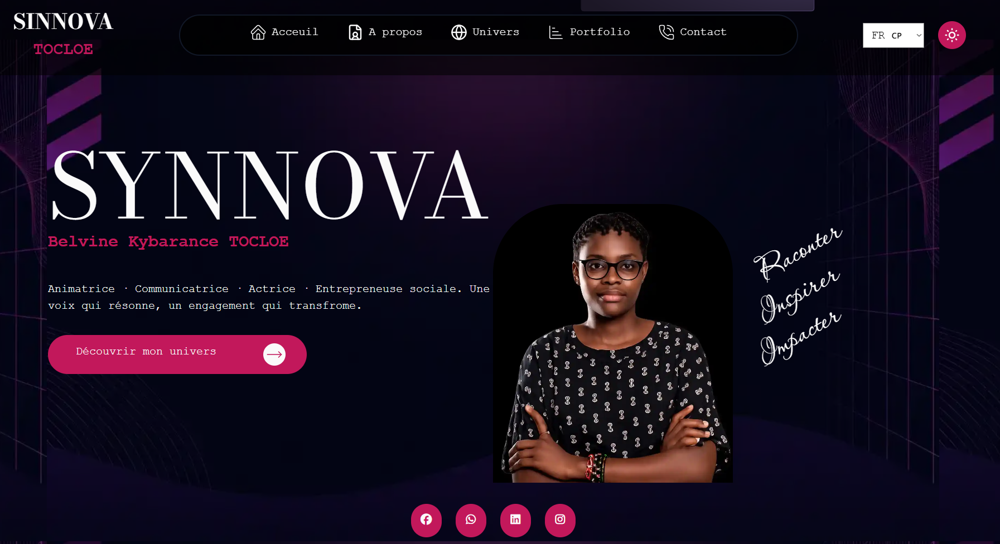
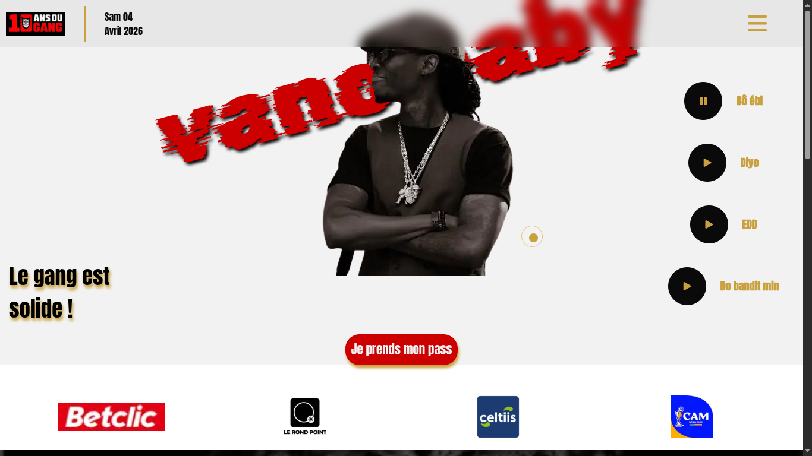
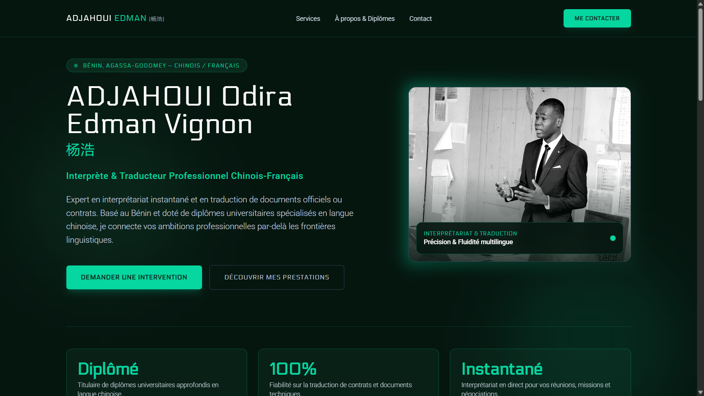

Vision & Alignement
Pourquoi l'équilibre exact entre ingénierie logicielle robuste et précision d'interface est le seul chemin vers le succès de votre produit numérique.
Mes Piliers Techniques
Architectures Robustes
Développement de serveurs API ultra-rapides, de bases de données hautement relationnelles et d'architectures distribuées adaptées à la charge.
Interfaces d'Impact
Création de parcours utilisateurs instinctifs dotés d'animations subtiles et fluides, garantissant des interactions soignées et mémorables.
Vélocité Absolue
Optimisation avancée des performances pour obtenir des scores Lighthouse parfaits, maximisant ainsi l'engagement de vos visiteurs.
MAITRISE TECHNOLOGIQUE
Une expertise technologique axée sur les stacks modernes à haute performance énergétique et computationnelle.
SYSTEMES & PRODUITS RECENTS

1 Créer un site pour une personnalité nationale du Bénin appelé Synnova TOCLOE.

2 Créer un site de vente de ticket pour la célébration des 10 ans de carrière d'un artiste national appelé Vano Baby.

3 Créer un portfolio à un traducteur français - chinois.
L'IMPACT PAR LES CHIFFRES
OPTIMISATION LIGHTHOUSE
Des temps de réponse inégalés
Parce que chaque milliseconde de gagnée améliore de manière significative le taux de conversion, je fais de l'optimisation réseau et du nettoyage de bundle une priorité absolue de mes processus de livraison. Zéro dépendance inutile, compression dynamique et mise en cache stratégique permettent de servir vos clients dans un confort visuel instantané.
Expérience & Parcours
Architecte Full-Stack sur des plateformes transactionnelles à forte charge.
En 3ème année, je conçois et déploie des applications web géantes et complexes.
Développeur Front-End orienté interfaces et micro-interactions haut de gamme.
Consultant technique pour startups innovantes et conception de plateformes SaaS.
Développeur Front-End orienté interfaces et micro-interactions haut de gamme.
Architecte Full-Stack sur des plateformes transactionnelles à forte charge.
Consultant technique pour startups innovantes et conception de plateformes SaaS.
En 3ème année, je conçois et déploie des applications web géantes et complexes.
Un projet d'envergure, une problématique de performance ou une ambition innovante ?
azariarodriguezvoitan@gmail.com
RODRIGUEZ-VOITAN Azaria
Basé à Abomey-Calavi, Disponible mondialement